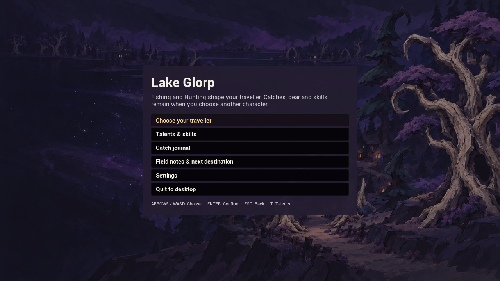
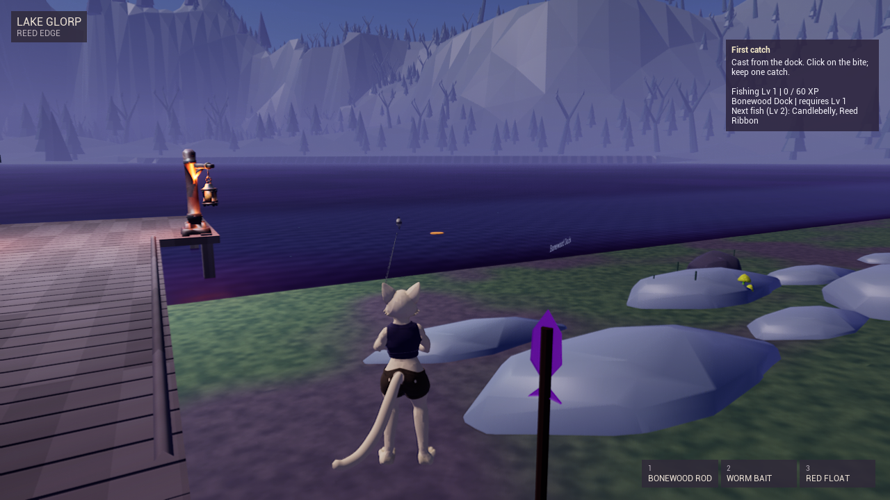
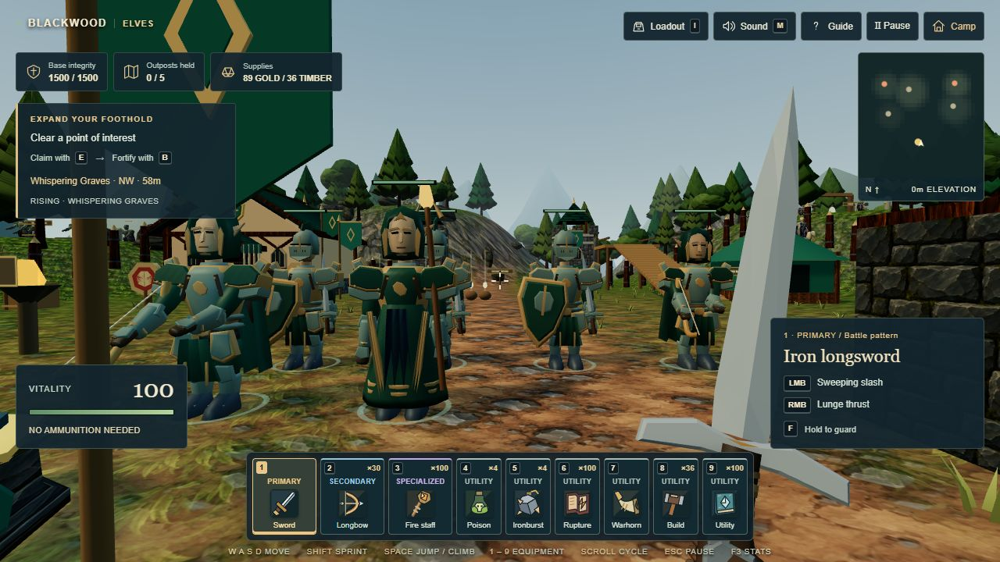
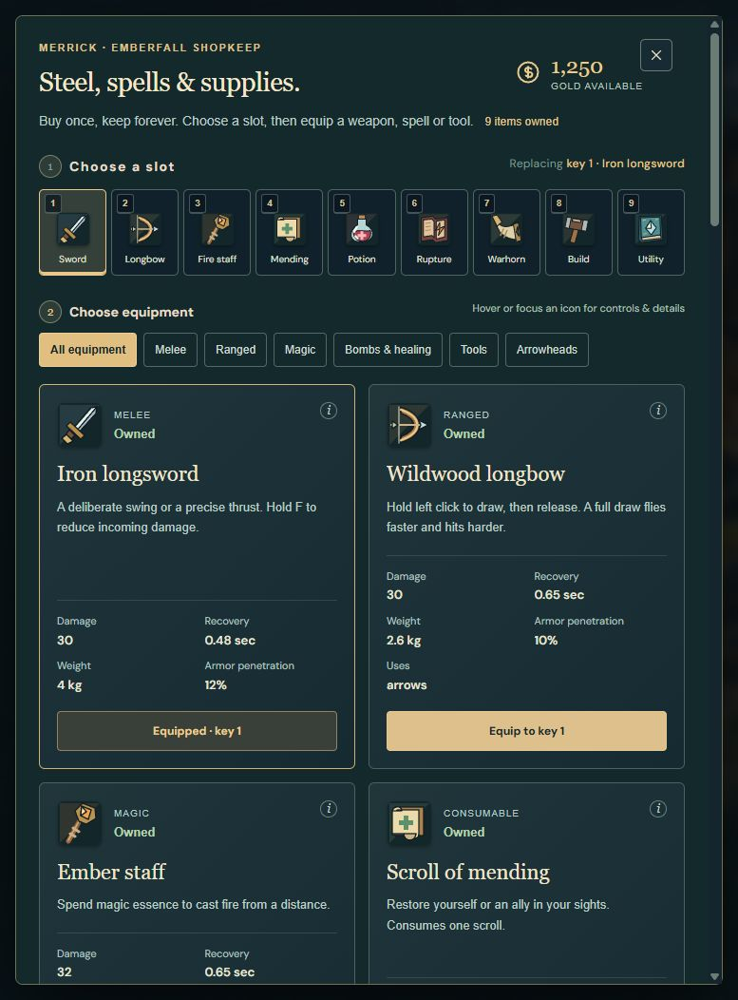

Cast, Catch, Collect
Fishing states connect the cast, bite, reel, catch reveal, backpack, and journal. Wrong-input and escape paths are tested alongside success.
Game Design Portfolio
Project Fibsh · WARDRAGONS · Professional contributions
Playable systems, purposeful worlds, and QA-led iteration.
A strange fishing vacation in Unreal Engine. A frontier skirmish game running in the browser. Alongside my professional design contributions, these projects show how I connect player goals, gameplay systems, presentation, and repeatable testing.
Background: WARDRAGONS gameplay capture. Both games are in development.
Design Lens
What is the player trying to do, what changed, and what feedback makes the result understandable?
Which system owns the decision, reward, progression, presentation, and persistent state?
What did a playtest, PIE check, or implementation review reveal, and what should change next?
Professional Design Contribution
Public-safe team contribution across two milestones. Proprietary requirements, tuning, implementation details, and team-authored assets remain private.
I contributed directly to quest and world-event design while working with Narrative Design, with team-authored details kept private.
I designed equipment recipes and considered how ingredients, progression, rewards, supporting data, and player expectations connected.
I helped translate system goals and item behavior into testable requirements, then used playtest findings and cross-discipline review to support iteration.
These are team contributions, not claims of sole ownership. I was preparing to transition formally into design when the unexpected studio closure interrupted that path.
Unreal Engine · In Development
A city cat's strange fishing vacation at Lake Glorp. The current packaged slice connects fishing, catch collection, character interaction, equipment, and skill progression. My work brings gameplay design and implementation together with build verification, regression checks, and persistence testing.
Fishing states connect the cast, bite, reel, catch reveal, backpack, and journal. Wrong-input and escape paths are tested alongside success.
Skills, talents, equipment, and route requirements connect player choices to visible feedback and durable progress.
NPC dialogue, a guided first catch, and distinct fishing areas establish the player's next goal without disconnecting it from the world.
Isolated builds, scoped automated checks, saved-state comparisons, and gameplay review keep implementation changes traceable.
Project Fibsh · Selected Packaged Captures
Selected from the packaged Unreal slice, these captures focus on the game's menu and fishing loop. Environment art and some props remain placeholder while the gameplay and presentation develop.

Character selection, talents, catch journal, field notes, and settings share a single menu. The illustrated background establishes Lake Glorp's visual direction.

The city-cat player, equipped rod, float, fishing area, and first-catch objective appear together in the playable loop.
Selected flat captures are public. Fibsh source, assets, builds, commercial plans, and production records remain private.
Three.js / WebGL · Playable Browser Prototype
Build a foothold, equip for the fight, and defend it. WARDRAGONS combines first-person combat with a persistent equipment collection, faction allies, outpost capture, and construction. The single-player prototype runs directly in the browser with keyboard/mouse and touch controls.
Sword contact windows, bow draw and release, projectile cover collision, and equipment-specific recovery connect animation to gameplay rules.
Shop purchases, owned equipment, loadout slots, loot, and outpost state connect short-term choices to a locally saved expedition.
Raised terrain, traversal, allied units, fortifications, and touch input create connected collision, targeting, and state-management challenges.

A readable camp hub brings faction identity, allies, equipment, base integrity, and the next outpost objective into one view.

Weapon categories, ownership, slot assignment, and item statistics make equipment choices inspectable before returning to the field.
Built with JavaScript, HTML/CSS, Three.js/WebGL, Web Audio, and browser-local saves. Game development uses agent-assisted implementation and human review. Prototype scope: single-player play, not multiplayer.
Design Process
Evidence
Selected packaged screenshots, gameplay systems, and the build-to-validation development loop.
View project summaryCombat, economy, persistence, browser rendering, and input-system validation.
Review projectDetailed system responsibilities, contribution boundaries, visual evidence labels, and design-to-validation reasoning.
View on GitHub